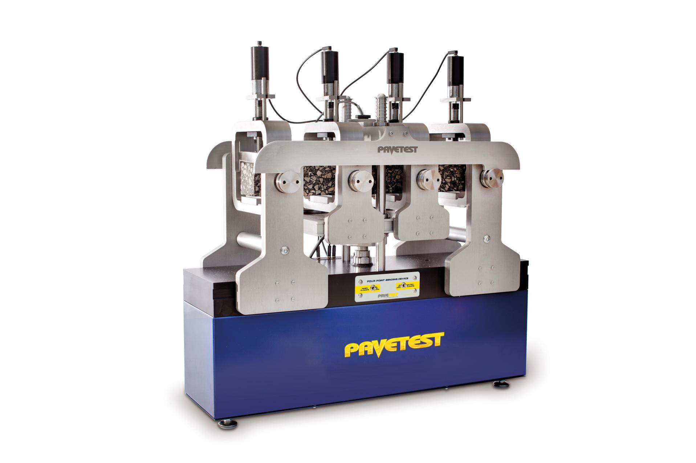
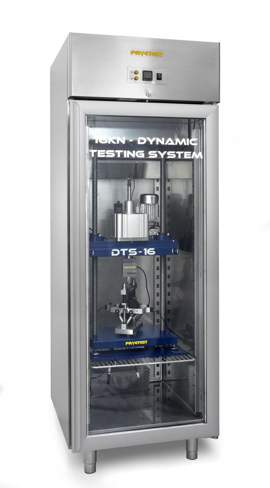
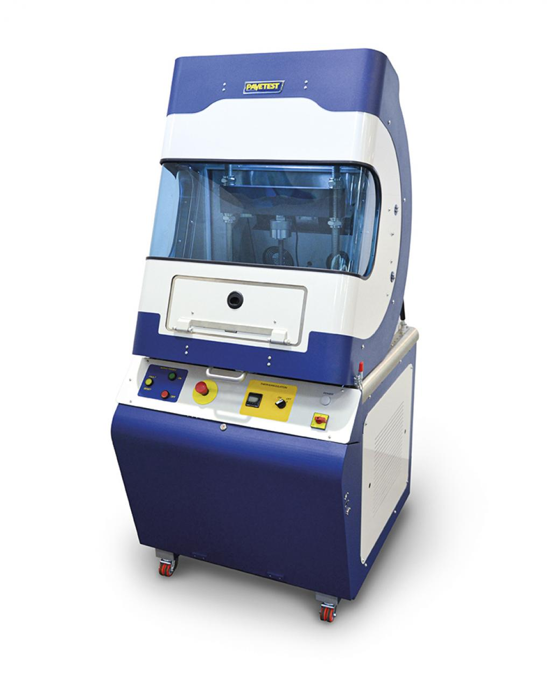

We offer a full range of pavement testing equipment designed for accurate analysis of road surfaces, ensuring that your pavement construction projects meet the highest standards. Our machines provide precise measurements for load testing, surface roughness, and core sampling, helping you assess the quality and durability of your pavement. Trusted by engineers and construction professionals worldwide, our equipment supports safe and efficient roadway construction practices.

B210
Pavement Deflectometer
This model is designed for accurate measurement of pavement deflection under load. It features a robust construction and advanced sensors for precise data collection.
View PDF Specs
B220-01-KIT
Servo-pneumatic Dynamic Testing System - DTS-16 Manual
The DTS-16 Dynamic Testing System is a servo-pneumatically controlled testing machine utilizing digital control of a pneumatic servo valve to provide accurate loading wave shapes up to 70 Hz. The DTS-16 can be operated in tension, compression dynamic loading and is suited to testing a diverse range of materials such as asphalt, soil, unbound granular materials, fibres and plastics.
View PDF Specs
B265
SmartPulse | Electro-Mechanical Dynamic Testing System
The SmartPulse 18 kN Electro-Mechanical Dynamic Testing System offers superior performance for testing a wide range of materials such as asphalt, soil, and unbound granular materials. Featuring a precision electro-mechanical actuator, this system is capable of applying both static and dynamic loads with unparalleled accuracy.
View PDF SpecsOur Services Include:
- Supply of soil testing equipment
- Geotechnical investigation services
- Calibration and verification services
- Equipment maintenance and repair
- Technical support and training